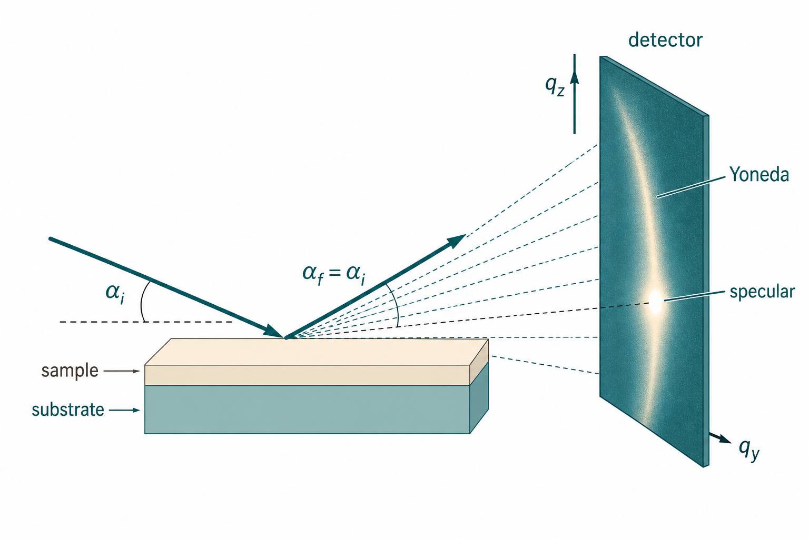

掠入射小角 X 射线散射（GISAXS）
Grazing-incidence small-angle X-ray scattering
本导读以 Müller-Buschbaum（2009）GISAXS 入门章节为骨架，结合聚合物高分辨 GISAXS（2006）、Hexemer & Müller-Buschbaum（2015）先进掠入射技术综述、嵌段共聚物薄膜计量学（2016）与光栅纳米计量（Wernecke 2012），说明反射几何下 2D 散射图样的来源、DWBA 动力学效应，以及薄膜与表面纳米结构实验中的关键概念。GISAXS 把GISAXS与 grazing incidence diffraction、X 射线反射率三条技术路线汇合，是软物质、半导体、金属与生物聚合物薄膜领域的标准表征手段之一。
问题是什么
透射 小角 X 射线散射（SAXS） 要求 X 射线穿透整块样品；对衬底上的薄膜、表面岛状结构或埋藏界面，衬底吸收强、信号路径复杂，透射几何往往不适用。GISAXS 以小掠入射角 $\alpha_i$ 照射样品表面，探测面内与面外的散射矢量 $\boldsymbol{q}=(q_x,q_y,q_z)$，在统计平均意义上给出大面积上的纳米结构信息，并可探测 AFM/TEM 难以到达的埋藏层。
GISAXS 要回答的典型问题包括：
- 薄膜或表面纳米粒子的尺寸、形状与形式因子 $P(q)$；
- 粒子间距与结构因子 $S(q)$ 引起的条纹（Bragg 峰或相关峰）；
- 入射角 $\alpha_i$ 与临界角 $\alpha_c$ 关系决定的探测深度；
- 原位条件下（温度、溶剂、反应）的动力学演化。
与透射 SAXS 不同，GISAXS 必须处理界面反射与折射：同一散射事件可伴随入射或出射方向的 Fresnel 反射，形成所谓的 DWBA（distorted-wave Born approximation）图像，而非简单的 Born 近似条纹。掠入射 footprint 效应使束在膜内路径 $\sim 2t/\sin\alpha_i$，在 $\alpha_i\sim\alpha_c$ 时可在弱散射软物质薄膜中获得足够计数（Hexemer & Müller-Buschbaum 2015）。

GISAXS 反射几何与 Yoneda / 镜面峰" width="900">核心文献主线
Müller-Buschbaum 2009：从几何到 2D 图样
该章按「历史 → 几何 → 粗糙表面 → 形式因子与干涉 → 层状体系 → 模拟与实验对照」展开：
- 历史脉络：1989 年 Levine 等在旋转阳极上做金纳米粒子 GISAXS；90 年代硬凝聚态多层膜与软物质聚合物体系相继引入；2000 年代后原位、微束 GISAXS 与 GIUSAXS 扩展可探测横向尺度。
- 散射几何：样品表面为 $xy$ 平面，入射面为 $xz$ 平面；$\alpha_i$、出射角 $\alpha_f$、面外角 $\psi$ 定义散射方向；2D 探测器记录 $q_x$、$q_y$、$q_z$ 分量。
- 四种散射路径（图 3.1）：直接散射（Born）、反射后散射、散射后反射、双反射路径相干叠加，各路径乘 Fresnel 反射系数 $R_F(\alpha_i)$、$R_F(\alpha_f)$。
- 临界角与三种 regime：$\alpha_i$ 相对聚合物膜与衬底 $\alpha_c$ 的大小划分倏逝波区、动态区与运动学区；不同区需不同理论近似（IsGISAXS 等软件中的 BA / DWBA）。
- $P(q)$ 与 $S(q)$ 的劈裂：与 SAXS 相同，GISAXS 截面常分解为粒子形状因子与干涉函数；但有效形式因子在 DWBA 下含折射权重，Yoneda 峰、镜面峰与 off-specular 条纹需一并解读。
与透射 SAXS 社区的关系
GISAXS 可视为「把透射 SAXS 转到反射几何」：面内 $q_\parallel=\sqrt{q_x^2+q_y^2}$ 探测横向结构，$q_z$ 携带深度与膜厚信息。同步辐射的高通量、良好准直与 2D 探测器是主流配置；实验室源 GISAXS 能力有限，但仪器进步已使部分实验室配置可行（Müller-Buschbaum 2009；Hexemer & Müller-Buschbaum 2015）。
Müller-Buschbaum 2006：聚合物薄膜的高分辨 GISAXS
聚合物混合膜与纳米结构可跨越分子尺度（~nm）到微米级相分离；AFM/TEM 统计代表性不足，而 GISAXS 大面积平均且可非破坏探测埋藏结构（Müller-Buschbaum 2006）。该文区分三种 GISAXS 配置（IsGISAXS 模拟）：
- $\alpha_i < \alpha_c$： 镜面峰在 Yoneda 翼下方；表面敏感极强，但低 $q_y$ 常被线性 beam stop 遮挡，不利高分辨。
- $\alpha_i \approx \alpha_c$： 镜面与 Yoneda 重合，低 $q_y$ 被 stop 阴影——类似透射 SAXS 的「束挡困境」，应避免作高分辨分析。
- $\alpha_i > \alpha_c$： Yoneda 在镜面峰下方，可延长样品–探测器距离、狭缝准直至像素极限，实现 relaxed / high / ultra-high 分辨；可探测聚合物共混的大尺度相分离并与光学显微重叠（Müller-Buschbaum 2006）。
反射几何下直射束不在探测器上，低 $q$ 不受透射 USAXS 式 beam stop 限制——这是 GISAXS 相对透射 USAXS 的分辨优势之一（Müller-Buschbaum 2006）。
Hexemer & Müller-Buschbaum 2015：先进掠入射技术图谱
IUCrJ 综述归纳近年软物质薄膜表征的扩展方向（Hexemer & Müller-Buschbaum 2015）：
- GISAXS + GIWAXS： 小角看介观形貌，宽角看分子取向与晶格；有机光伏等需跨尺度联用。
- 微束 / 纳米束 GISAXS： 局域缺陷、图案化区域与工艺不均匀性。
- 毫秒级时间分辨： 快单光子计数探测器 + 高 brilliance 源，原位成膜、退火、溶剂退火动力学。
- 软 X 射线 / tender X 射线 GISAXS： 在吸收边附近微调能量，强烈改变衬度而不改几何。
- GISANS / TOF-GISANS： 中子衬度与氘代策略；时间飞行模式扩展 $q$ 与深度信息。
- 分析软件： IsGISAXS、BornAgain 等支持 DWBA；DA / LMA / SSCA 处理多分散与尺寸–间距关联（Hexemer & Müller-Buschbaum 2015）。
有效表面近似下漫散射截面：
$$\left.\frac{d\sigma}{d\Omega}\right|_{\mathrm{diff}}=\frac{C\pi^2}{\lambda^4}(1-n^2)^2|T_i|^2|T_f|^2 P(\mathbf{q}),$$四路径 DWBA 将 Born 形式因子 $F(\mathbf{q})$ 替换为含 $R(\alpha_i),R(\alpha_f)$ 的叠加；$\alpha_{i,f}\gg\alpha_c$ 时退回 BA（Hexemer & Müller-Buschbaum 2015）。
Müller-Buschbaum 2016：BCP 薄膜三维计量
嵌段共聚物（BCP）微相分离周期可达 sub-10 nm，是半导体「自下而上」光刻候选。SEM 直观但统计有限；GISAXS 与 GISANS 作为计量（metrology）手段可统计性给出三维畴形貌、取向、缺陷密度与线边缘粗糙度（Müller-Buschbaum 2016）。
- 薄膜中基底/空气界面相互作用使体相球–柱–层形态之外出现平行/垂直取向等薄膜特有态；需 graphoepitaxy / chemoepitaxy 引导（Moon et al., 引自 Müller-Buschbaum 2016）。
- PS-b-PMMA、PS-b-PDMS 等体系：热退火与溶剂蒸气退火动力学可用 GISAXS 跟踪；warm solvent annealing 可在 0.5 min 内形成 13 nm 线宽图案（Kim et al., 引自 Müller-Buschbaum 2016）。
- 高 $\chi$ 嵌段（如含 PDMS）可达 <10 nm 周期但自组装动力学慢；GISAXS 适合监测缺陷湮灭与取向演化，补足成像（Müller-Buschbaum 2016）。
Wernecke 等 2012：光栅结构的傅里叶计量
对周期 $P\sim833$ nm 的电子束光栅，GISAXS 在光栅线平行/垂直两种方位下，用傅里叶分析（无需完整 DWBA 拟合）提取线宽、槽宽、线高，结果与标称值一致，面向可溯源纳米计量（Wernecke, Scholze & Krumrey 2012）。要点：倒易空间光栅截断杆（GTR）与 Ewald 球交截决定峰位；$\alpha_i\gtrsim3\alpha_c$ 时运动学近似常足够分析 $q_y$ 方向剖面。
关键公式与结论
折射率与临界角
X 射线在介质中折射率 $n_j = 1 - \delta_j + i\beta_j$，略小于 1。色散项
$$\delta_j(\boldsymbol{q},\lambda)=\frac{e^2\lambda^2}{8\pi^2 m_e c^2 \varepsilon_0}\rho_j \frac{\sum [f_k^o(\boldsymbol{q},\lambda)+f_k'(\lambda)]}{\sum M_k},$$
吸收项 $\beta_j$ 含 $f_k''$。材料 $j$ 的全反射临界角（小角近似）
$$\alpha_{c,j}\approx\sqrt{2\delta_j},$$
故临界角位置反映电子密度 / SLD，可用于识别材料（Müller-Buschbaum 2009）。
散射矢量分量
固定波长 $\lambda$，$k_0=2\pi/\lambda$，
$$q_x=\frac{2\pi}{\lambda}\bigl[\cos\psi\cos\alpha_f-\cos\alpha_i\bigr],\quad q_y=\frac{2\pi}{\lambda}\sin\psi\cos\alpha_f,\quad q_z=\frac{2\pi}{\lambda}\bigl[\sin\alpha_i+\sin\alpha_f\bigr].$$
镜面散射：$q_x=q_y=0$，$q_z\neq 0$，主要探深度；离轴散射 $q_\parallel\neq 0$ 探面内结构。实验常用 beam stop 遮挡直射束与镜面峰，避免探测器饱和。
三种入射角 regime（聚合物/衬底体系）
入射角 $\alpha_i$ 相对薄膜与衬底临界角 $\alpha_c$ 的位置决定探测深度、DWBA 权重与可用理论近似。下表汇总三种 regime 的物理图像与实验含义（Müller-Buschbaum 2009）：
| Regime | $\alpha_i$ 条件 | 探测深度 | 场分布 | 适用理论 | 典型 2D 图样特征 |
|---|---|---|---|---|---|
| 倏逝波区（evanescent） | $\alpha_i < \alpha_c(\mathrm{film})$ | 数十 nm（$\sim \lambda/4\pi\sqrt{\delta}$） | 场局域表面附近，指数衰减 | 全 DWBA；BA 失效 | Yoneda 峰极强；面内条纹弱；深度敏感 |
| 动态区（dynamic） | $\alpha_c(\mathrm{film}) < \alpha_i < \alpha_c(\mathrm{sub})$ | 膜厚量级（100 nm–1 μm） | 膜内传播 + 衬底全反射；倏逝场耦合 | DWBA 必需；IsGISAXS BA/DWBA 切换 | Yoneda 双峰（膜/衬底 $\alpha_c$）；条纹随 $\alpha_i$ 移动 |
| 运动学区（kinematic） | $\alpha_i > \alpha_c(\mathrm{sub})$ | 可达 μm（束在膜内路径 $\sim t/\sin\alpha_i$） | 透射主导，反射项减弱 | 低 $\alpha_i$ 仍须 DWBA；极高 $\alpha_i$ 可近似 BA | 镜面峰减弱；off-specular 条纹接近透射 SAXS 形态 |
数值直觉：聚合物膜 $\alpha_c \sim 0.12°$–$0.15°$（8–10 keV），Si 衬底 $\alpha_c \sim 0.20°$。$\alpha_i = 0.10°$ 时场深 $\sim 5$ nm；$\alpha_i = 0.14°$（略高于膜 $\alpha_c$）时可达 100–200 nm；$\alpha_i = 0.25°$ 时束在 100 nm 膜内路径 $\sim 23$ μm。
IsGISAXS 模拟表明：同一 PNIPAM 圆柱岛阵列，改变 $\alpha_i$ 会显著改变 Yoneda 峰位置与条纹对比（Müller-Buschbaum 2009，图 3.4）。切勿固定单一 $\alpha_i$ 解读结构——至少做 2–3 个 $\alpha_i$ 扫描验证深度与 DWBA 一致性。
DWBA vs Born 近似：何时必须升级
| 条件 | Born 近似（BA）可接受 | 必须 DWBA |
|---|---|---|
| $\alpha_i$ 相对 $\alpha_c$ | $\alpha_i \gg \alpha_c$（$>3\times$），且远离 Yoneda | $\alpha_i \sim \alpha_c$ 或 $\alpha_f \sim \alpha_c$ |
| 反射系数 | $R_F(\alpha_i), R_F(\alpha_f) \ll 1$ | $R_F \sim 0.1$–$1$（临界角附近） |
| 图样特征 | 仅 off-specular 弱条纹，无 Yoneda | 强镜面峰、Yoneda 峰、条纹随 $\alpha_i$ 移动 |
| 拟合偏差 | BA 与 DWBA 预测差异 $<10\%$ | BA 系统性低估/高估条纹强度 $>30\%$ |
| 推荐软件 | 简单形状因子估算 | IsGISAXS、BornAgain、Refl1D+GISAXS 模块 |
散射截面与 $P$、$S$ 分解
运动学近似下
$$\frac{d\sigma}{d\Omega}(\boldsymbol{q})=\frac{1}{N}\sum_{i,j} F^i(\boldsymbol{q}) F^{j,*}(\boldsymbol{q}) \exp\bigl[i\boldsymbol{q}\cdot(\boldsymbol{R}_\parallel^i-\boldsymbol{R}_\parallel^j)\bigr],$$
Born 近似中 $F^i$ 为形状函数的傅里叶变换；DWBA 中 $F^i$ 含界面传播因子。常用简化：解耦近似（DA）、局域单分散近似（LMA）、尺寸-间距相关近似（SSCA），与 AFM/TEM 对照选用（Müller-Buschbaum 2009）。
2D 图样上的特征峰
- 镜面峰（S）：$\alpha_i=\alpha_f$，$q_x=q_y=0$；全反射条件下极强，须 beam stop 遮挡；
- Yoneda 峰（Y）：$\alpha_f\approx\alpha_c$，电子密度对比引起的增强；探测器上位置 $\alpha_Y\approx\alpha_i+\alpha_c$；位置给出材料 $\alpha_c$（Yoneda 1963；Hexemer & Müller-Buschbaum 2015）；
- Bragg / 相关条纹：面内有序或相关间距在 $q_y$（或 $q_\parallel$）方向的峰列，反映 $S(q)$。
- 镜面峰（S）： 位于 $q_x=q_y=0$ 竖直条纹；强度可比漫散射高 $10^3$–$10^6$ 倍。确认 beam stop 已遮挡且未饱和；stop 阴影区在分析中须掩膜。镜面峰宽度反映界面粗糙度（Nevot–Croce）。
- Yoneda 峰（Y）： 出现在 $q_z$ 对应 $\alpha_f \approx \alpha_c$ 处；膜/衬底各有一个 $\alpha_c$ → 可能双峰。峰位可用于识别材料层：$q_{z,Y} \approx 2k_0 \alpha_c$。若 Yoneda 缺失，检查 $\alpha_i$ 是否过低（倏逝波区）或膜过于光滑。
- Off-specular 条纹： $q_\parallel \neq 0$ 的散射；条纹间距 $\Delta q_y \approx 2\pi/d$ 给出面内周期 $d$。须与 Yoneda 区分——条纹平行于 $q_y$ 轴，Yoneda 为竖直增强带。
- $\alpha_i$ 扫描验证： 固定样品，测 $\alpha_i = 0.8\alpha_c$、$\alpha_c$、$1.2\alpha_c$、$2\alpha_c$（膜/衬底）；条纹位置与强度应可用 DWBA 一致解释。若仅单角度数据，建模时须固定 $\alpha_i$ 并报告敏感性。
- $q$ 刻度： 掠入射几何下 $q_x, q_y, q_z$ 非正交；标定须用 GISAXS 专用标准（如 gratings）或理论 $\alpha_c$ 位置校验。勿直接套用透射 SAXS 的 $q = 4\pi\sin\theta/\lambda$。
实践要点与坑
- 同步辐射与 2D 探测器 → 如何判断： GISAXS 信噪比高度依赖通量；聚合物共混等弱衬度体系常需同步辐射或高分辨长时曝光（Müller-Buschbaum 2006）。实验室源若 off-specular 条纹信噪比 $< 3$，勿强行拟合 $P(q)$。
- beam stop 与饱和 → 如何判断： 镜面与直射束比漫散射高几个数量级；stop 形状会在低 $q$ 留下阴影，拟合时需掩膜。$\alpha_i\approx\alpha_c$ 时 stop 阴影与 Yoneda 重叠，高分辨失效（Müller-Buschbaum 2006）。
- $\alpha_i$ 选取 → 如何判断： 不要盲目固定角度；应相对 $\alpha_c$ 规划，并可用多个 $\alpha_i$ 扫描深度。薄膜无纳米结构时 GISAXS 几乎只有镜面峰——光滑膜只适合做反射率，不产生 GISAXS 条纹。
- DWBA 不是可选项 → 如何判断： 在 $\alpha_i\sim\alpha_c$ 附近用 Born 解释条纹会系统性偏差；Yoneda 峰强度被 BA 低估可达 50% 以上。应用 IsGISAXS、BornAgain 等支持 DWBA 的软件（Hexemer & Müller-Buschbaum 2015）。
- 取向与 $\omega$ 角 → 如何判断： 光栅或取向 BCP 薄膜图样对样品方位角 $\omega$ 敏感；旋转 $\omega$ 90° 后条纹消失或移位 → 须做 $\omega$ 扫描，不可假设「2D 粉末」。光栅计量需区分平行/垂直取向（Wernecke 2012）。
- GIWAXS 与 GISAXS 分工 → 如何判断： 结晶峰（如 P3HT $\pi$–$\pi$ 堆叠）在典型 GIWAXS 几何下可能不可达，勿用 GISAXS 单独判分子取向（Hexemer & Müller-Buschbaum 2015）。
- 多分散与动力学 → 如何判断： 与 SAXS 相同，粒径分布会洗平条纹；原位实验注意辐射损伤与漂移。毫秒级时间分辨可捕捉退火中间态（Hexemer & Müller-Buschbaum 2015；Santoro & Yu 2017）。
- 与 AFM/TEM 互补 → 如何判断： GISAXS 给统计平均；局域缺陷需显微；建模时常用 AFM 高度分布约束 $P(q)$。BCP 计量中 SEM 看局域、GISAXS 给周期与缺陷统计（Müller-Buschbaum 2016）。
相关词条
GISAXS、 DWBA、 Yoneda 峰、 散射矢量 $q$、 形式因子、 结构因子、 散射长度密度、 衬度、 嵌段共聚物、 Porod 定律
相关学习章
- 02 散射基础 — $q$、$P(q)$、$S(q)$ 概念
- 03 仪器与几何 — 针孔 SAXS 与 2D 探测器
- 09 应用岔路 — 软物质 / 薄膜分支
- 绝对标定 — 若需与透射 SAXS 定量拼接
文献列表
- A Basic Introduction to Grazing Incidence Small-Angle X-Ray Scattering. Peter Müller-Buschbaum (2009). In: Soft Matter Characterization（书章节；无独立期刊 DOI）。
- High-resolution grazing incidence small angle X-ray scattering: investigation of micrometer sized structured polymer films. P. Müller-Buschbaum (2006). DOI: 10.1007/2882_031
- Advanced grazing-incidence techniques for modern soft-matter materials analysis. Alexander Hexemer, Peter Müller-Buschbaum (2015). DOI: 10.1107/S2052252514024178
- GISAXS and GISANS as metrology technique for understanding the 3D morphology of block copolymer thin films. Peter Müller-Buschbaum (2016). DOI: 10.1016/j.eurpolymj.2016.04.007
- Direct structural characterisation of line gratings with grazing incidence small-angle x-ray scattering. Jan Wernecke, Frank Scholze, Michael Krumrey (2012). DOI: 10.1063/1.4758283
- Grazing incidence small angle X-ray scattering as a tool for In-situ time-resolved studies. Gonzalo Santoro, Shun Yu (2017). DOI: 10.5772/64877